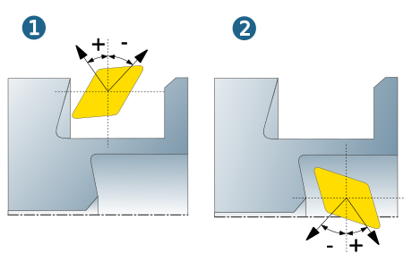

Parameters
Infeed
Constant (1): Constant infeed depth over the entire machining area.
Ascending (2): Based on a starting infeed (a) the infeed value is increased by one value per cut. The Maximal cutting depth (b) prevents infeed depths that can cause tool breakage.
Descending (3): Based on a starting infeed (a) the infeed value is increased by one value per cut. The Minimal cutting depth (b) prevents infeed depths that are too small.
Ramp (4): The infeed alternates between tapered and horizontal. By defining the infeed (a) and the minimal cutting depth (b), the ramp angle is calculated automatically in relation to the contour.
 |
Clearance
Macro clearance: Minimum distance of the tool to the turning area during approach and retract movements. If the tool is closer to the turning area, a macro is generated automatically, which ensures that the tool does not touch the turning area for approach and retract movements in G0.
Clearance distance (1): clearance movement at feedrate before the rapid movement begins.
 |
Clearance radius (X): Radius for rapid tool movements in the X direction (1).
Clearance plane (Z): Plane for rapid tool movements in the Z direction (2). Only available for Inside machining and Plane options.
 |
Retract plane (Z): Activating the Radial limit / Axial limit option (Strategy dialog page) in combination with the Retract plane (Z) parameter makes it possible to drive out the tool from the undercutting areas. The Retract plane (Z) is displayed as graphical feedback (1).
 |
Turning model
Model allowance (1): Global allowance on the model.
Additional allowance Z (2): Allowance in Z direction.
Additional allowance X (3): Allowance in X direction.

Transition mode: Define a Rapid angle for the rapid movement, either for the approach, retract or for the approach and retract.
Rapid angle using the example of Outside(1) / Inside (2) machining.
|  |
Approach and retract
Define the approach movement from the clearance radius (X) to the macro and the departure movement from the macro to the clearance radius (X).
Angle
Use → to automatically adapt the approach and retract movement to the defined approach/retract macro.
Use → or → to define an angle for the approach or retract movement to the macro.
|
Example |
A) Roughing, → B) Roughing, → : -20 1) Approach/Retract movement, 2) Clearance radius (X) |
 |
|
Manual curves
Use → to define an individual approach or retract movement.
Select the Approach curve / Retract curve. The number of selected curves is displayed.
Connection to macro
Select Direct if you want the approach or retract movement to take the most direct path.
Select ZX if you want the approach or retract movement to start along the Z axis and then continue along the X axis of the defined frame.
Select XZ if you want the approach or retract movement to start along the X axis and then continue along the Z axis of the defined frame.
Select the Feedrate for the Approach curve / Retract curve. Default = 5 mm/revolution.
|
Example |
A) Finishing, Manual curves, → . The retract movement from the macro takes the most direct path. A) Finishing, Manual curves, → . The retract movement starts along the Z axis and then continues along the X axis of the defined frame. 1) Contour to be machined, 2) Retract curve, 3) Clearance plane (Z), 4) Clearance radius (X) |
 |
|